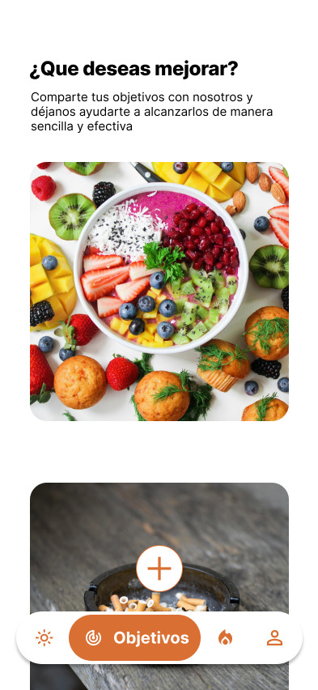
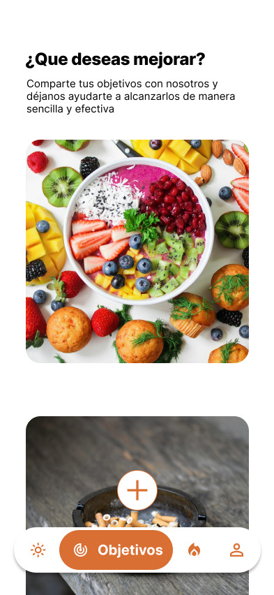

Sobre el proyecto
En este proyecto desarrollé el diseño y prototipo de una aplicación interactiva enfocada en la salud mental de la Generación Z, un tema con el que tengo una conexión personal profunda. Mi experiencia individual y el análisis de otras plataformas similares me impulsaron a crear una herramienta más cercana, funcional y adaptada a las necesidades reales de los jóvenes. La aplicación busca no solo ofrecer apoyo emocional accesible, sino también contribuir a normalizar las conversaciones sobre salud mental y reducir los estigmas que la rodean. Combinando diseño centrado en el usuario con una visión empática y crítica, mi objetivo es crear una experiencia digital intuitiva que realmente conecte con quienes la usan y promueva el bienestar desde lo cotidiano.

Desarrollo y estructura del proyecto


Desde el momento en que el usuario ingresa a la aplicación, se encontrará con el logo en grande, creando una primera impresión limpia y profesional. Tras un breve "after-delay", será redirigido automáticamente a una segunda pantalla que contiene un mensaje de bienvenida. Consideré fundamental incluir en esta etapa un aviso claro de que la aplicación no sustituye la ayuda profesional. Esto se debe a la sensibilidad de los temas relacionados con la salud mental y al uso de una IA, que, aunque diseñada para apoyar al usuario, puede no ser completamente confiable en todos los casos. Al presionar el botón de “Comenzamos”, se despliega un layout desde la parte inferior de la pantalla que presenta las opciones de “Crear cuenta” o “Iniciar sesión”. Este diseño busca ser intuitivo y accesible, permitiendo al usuario elegir fácilmente la acción que desea realizar, ya sea registrarse como nuevo usuario o acceder a su cuenta existente.

Esta es la página donde el usuario puede visualizar su plan actual y gestionar su suscripción. Como se mencionó previamente, la aplicación ofrece una amplia variedad de funciones, y para mantener la competitividad en el mercado, algunas de estas funcionalidades están disponibles exclusivamente a través de un plan premium. Esta estrategia permite sostener el desarrollo continuo de la aplicación y garantizar su calidad. En esta página, el usuario puede optar por actualizar su plan seleccionando la opción "Suscribirme a plan premium", que lo redirigirá a la sección de métodos de pago. Las opciones disponibles incluyen las plataformas más reconocidas y confiables: tarjeta de crédito, Apple Pay y tarjeta de regalo. Al seleccionar cualquiera de estas opciones, se desplegará un formulario donde el usuario podrá ingresar su información de pago y autorizar la transacción. Una vez completado el proceso, aparecerá una notificación de "Compra exitosa", confirmando la activación del plan premium. A partir de ese momento, el usuario tendrá acceso inmediato a todas las funciones exclusivas, mejorando su experiencia en la aplicación.


 

Otra sección destacada es la de Motivaciones, inspirada en la app I Am Sober, donde el usuario puede registrar aquello que lo impulsa a seguir adelante. Esta funcionalidad permite añadir textos o imágenes significativas, reforzando el compromiso personal y proporcionando un recordatorio constante de las razones para continuar. La app también cuenta con una página destinada a la gestión del plan premium, en la que el usuario puede visualizar su suscripción actual y, si lo desea, actualizarla. El proceso de pago se realiza de forma segura a través de plataformas confiables como Apple Pay o tarjeta de crédito, y al completar la transacción, se activa el acceso inmediato a funciones exclusivas. Por último, la sección de Perfil centraliza toda la información relevante del usuario y ofrece opciones como editar datos personales o eliminar la cuenta. Esta última acción está protegida por una pantalla de confirmación para garantizar que se trata de una decisión consciente. Cada una de estas páginas fue diseñada para construir una experiencia intuitiva, funcional y empática, brindando al usuario herramientas prácticas para gestionar su salud mental de manera activa y personalizada.
← Volver a Mis Trabajos